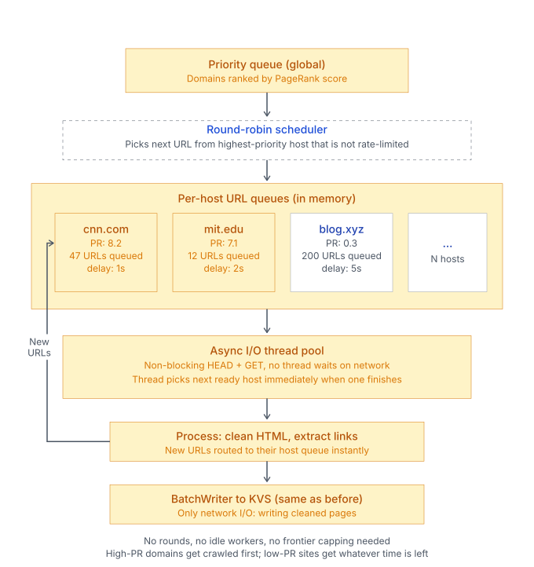
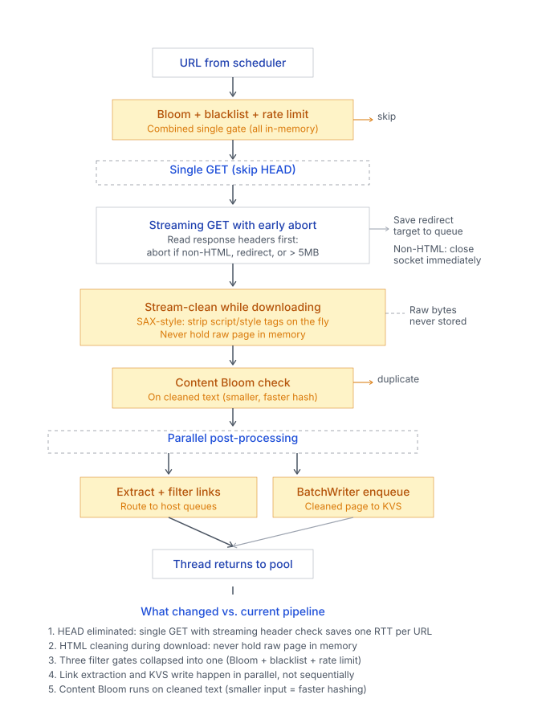

CIS 5550 Internet and Web Systems · Fall 2025 · University of Pennsylvania
Jaime Walter · Sean D · Rania S · Maxwell Y
Together with my team, I built a web search engine as the final project for CIS 5550 (Internet and Web Systems). The system crawls the web, indexes pages, computes PageRank, and serves ranked results through a Google-style frontend. Every layer was written from scratch in Java and deployed on AWS EC2.
By the end, we had crawled 500k pages (300k with valid HTML content) across 5 EC2 workers in under 8 hours, and served search results in an average of 23 milliseconds.
The system is a four-layer stack. At the bottom, a custom web server handles HTTP parsing, routing, static files, and sessions. On top of that, a distributed key-value store (KVS) provides persistent, partitioned storage across workers. Above KVS sits Flame, our Apache-Spark-like distributed computing framework that lets you write MapReduce-style jobs using RDDs and PairRDDs. Finally, the application layer runs four jobs — Crawler, Indexer, PageRank, and SearchServer — all built on Flame and KVS.
The crawler feeds into the indexer, the indexer feeds into PageRank, and all three produce tables that the search server queries at runtime. The frontend is a vanilla HTML/CSS/JS client that talks to the search server over REST.
My main focus was optimizing the base components (web server, KVS, Flame) from the homework version, building the crawler, and AWS EC2 deployment. I also contributed to design choices, code review, and debugging across the stack.
A from-scratch HTTP/1.1 server: raw socket I/O, request parsing (method, headers, body, query params, cookies), route matching with named parameters (e.g. /data/:table/:row), static file serving with content-type detection, session management, before/after filters, HTTPS via SSLSocket, and virtual hosting. The server uses a thread-pool model — a blocking queue of accepted connections consumed by worker threads. This is the foundation everything else runs on: KVS workers, Flame workers, the Flame coordinator, and the search server all use this web server.
A distributed, persistent key-value store. Data is organized into tables of rows, where each row has a string key and arbitrary named columns of byte arrays. Workers persist data to disk and serve it over HTTP. A coordinator tracks live workers via heartbeat pings and routes client requests using rendezvous hashing, which distributes data evenly.
The most impactful optimization I made was batch writing. Instead of one HTTP PUT per cell, the BatchWriter accumulates rows per worker per table, then sends them all in a single PUT with a multi-row binary payload. This reduced network round-trips by orders of magnitude and was c ritical for making the indexer and crawler viable on EC2 — without it, KVS I/O was the bottleneck that made everything else too slow.
A distributed computing framework modeled on Apache Spark.
The coordinator accepts JAR files, partitions work across Flame
workers, and each worker pulls data from KVS, applies serialized
lambdas, and writes results back. The API supports
flatMap, mapToPair,
foldByKey, join,
filter, sample,
distinct, intersection,
and more.
A distributed BFS-style web crawler running as a Flame job.
The URL frontier is a FlameRDD that distributes URLs across
workers. Each round applies a flatMap where
workers process URLs in parallel and return newly discovered
links for the next round.
Key design decisions:
At query time, the search server parses the query, stems terms with Porter Stemmer, looks up the inverted index in parallel, validates phrase matches using positional data, and scores each candidate URL.
The score is a weighted combination: 0.3 × TF-IDF + 0.7 × PageRank, with multiplicative boosts for title matches, all query terms present, homepage URLs, exact phrases, word proximity, and URL keyword matches. Penalties apply for missing titles, query-string URLs, and deep paths.
Beyond learning how to implement each of these systems, the single biggest takeaway was that distributed KVS I/O dominates everything. Every optimization that mattered was about reducing the number of network round-trips to the key-value store.
Writing this some months after this project, if I were
to do it again, especially without the constraints of the class,
I would not use the Flame round-based model for crawling at all.
The fundamental problem is that each flatMap round
has to wait for the slowest worker to finish before the next round
starts. Instead, I would implement async I/O with per-host URL
queues (inspired by the Mercator design) and a PageRank-priority
round-robin scheduler that runs continuously rather than in synchronized
rounds. I believe this approach, even on a single machine, would have
been faster than our distributed Flame version and produced a better-quality
corpus (because you could prioritize high-authority domains instead of relying
on heuristic frontier capping and link quotas).

Additionally, I now see even more improvements I should have made to the crawler. A main one is mergin the HEAD and GET requests into a single streaming GET that processes the response as it downloads, with early exits for content type and size, and streaming cleanup that feeds directly into the language detector and link extractor without needing to buffer the entire raw HTML page in memory. This would have reduced latency, network usage, and memory pressure significantly, especially for large pages. Here is a better system diagram reflecting these improvements:

Java · Distributed Systems · MapReduce · HTTP/1.1 · TCP Sockets · AWS EC2 · Key-Value Stores · Bloom Filters · TF-IDF · PageRank · Porter Stemming · HTML/CSS/JS